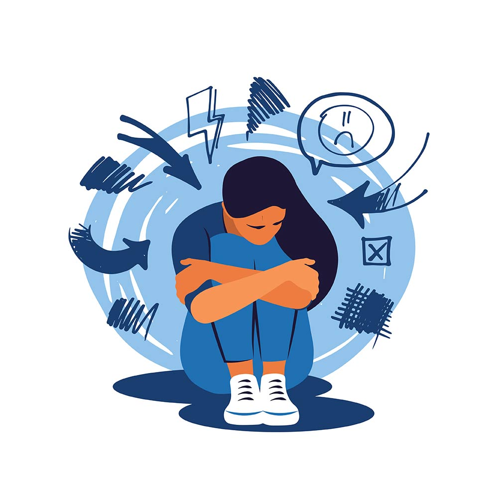
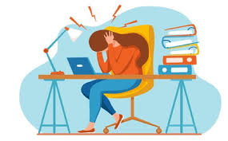
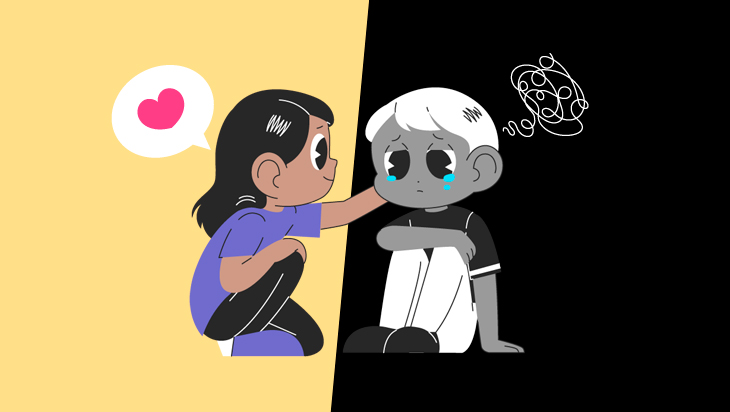
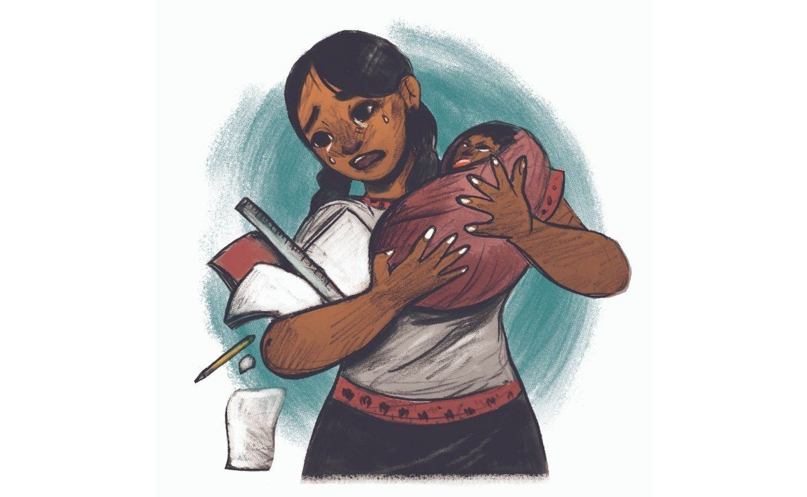
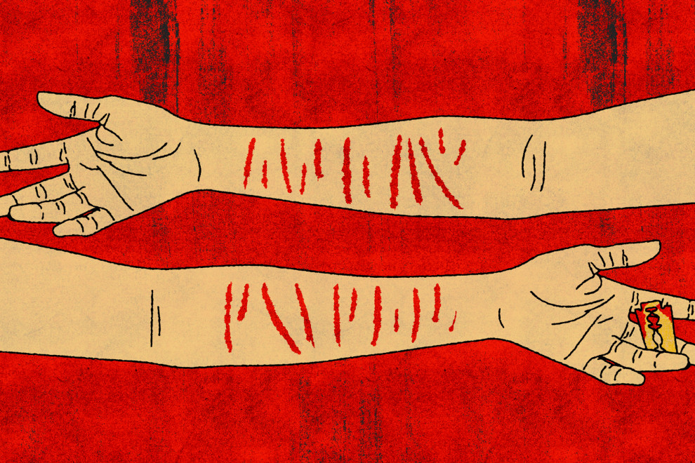

Se conoce como adicción a las drogas, o drogadicción, al consumo frecuente de estupefacientes, a pesar de saber las consecuencias negativas que producen. Entre otras cosas, modifican el funcionamiento del cerebro y su estructura, provocando conductas peligrosas.
CONADIC (Comisión Nacional contra las Adicciones) Llama al Centro de Atención Ciudadana contra las Adicciones (CECIADIC), donde puedes recibir asesoría especializada de manera gratuita y confidencial las 24 horas los 365 días del año a través de una llamada telefónica: 01 800 911 2000.
A continuacion la Direccion del Sitio Web:
Sitio Oficial del Gobierno de CONADIC
Miedos y preocupaciones recurrentes sobre partes de las rutinas de todos los días. Cambios de comportamiento, tal y como la irritabilidad. Evitar ciertas actividades, la escuela o interacciones sociales. Baja en las calificaciones o evasión de la escuela.
Sentir ansiedad de modo ocasional es una parte normal de la vida. Sin embargo, las personas con trastornos de ansiedad con frecuencia tienen preocupaciones y miedos intensos, excesivos y persistentes sobre situaciones diarias.
A continuacion la dirrecion de un Sitio web que les puede brindar consejos y ayuda, aunque preferimos que acuda al medico:
Trastornos de ansiedad 
Tener problemas con amigos, acoso escolar o presiones de grupos de compañeros. Volverse sexualmente activos o sentir presión para hacerlo. Cambiar de escuela, mudarse o lidiar con problemas de vivienda o falta de vivienda. Tener pensamientos negativos sobre ellos mismos.
El estrés es normal. Pero, aunque algo de estrés es normal e incluso necesario, demasiado estrés puede afectar su calidad de vida y su salud. Estas son algunas medidas sencillas que puede tomar para ayudar a aliviar el estrés.
Alivio del estrés y relajación 
La depresión en adolescentes es un problema de salud mental grave que provoca un sentimiento de tristeza constante y una pérdida de interés en realizar diferentes actividades. Afecta la manera en que tu hijo adolescente piensa, se siente y se comporta, y puede provocar problemas emocionales, funcionales y físicos.
es una enfermedad médica grave. Es más que sentirse triste durante unos días. Es un intenso sentimiento de tristeza, desesperanza e ira o frustración que dura mucho tiempo. Estos sentimientos hacen que te sea difícil tener una vida normal y hacer tus actividades habituales. También puedes tener problemas para concentrarte y no tener motivación o energía. La depresión puede hacerte difícil disfrutar la vida o incluso superar el día.
Depresión en adolescentes 
El embarazo en la adolescencia es un fenómeno mundial con causas claramente conocidas y graves consecuencias sanitarias, sociales y económicas tanto para las personas afectadas como para sus familias y comunidades.
Cuando una adolescente queda embarazada o tiene un hijo, su salud, educación, potencial de obtener ingresos y todo su futuro pueden estar en peligro, y puede quedar atrapada en una vida sumida en la pobreza, la exclusión y la impotencia.
Embarazo en adolecentes 
La autolesión, también conocida como autoagresión, automutilación o autoabuso, se produce cuando las personas se hacen daño a propósito sin intención de matarse. Los expertos médicos suelen referirse a los cortes y a otras formas de autolesión como autolesiones no suicidas, o NSSI.
El hecho de que un niño o adolescente comience a autolesionarse no significa automáticamente que tenga pensamientos suicidas o que desee morir. Sin embargo, estudios más recientes muestran que cuando las NSSI continúan durante períodos prolongados, los niños y los adolescentes corren un mayor riesgo de tener pensamientos y acciones suicidas. Por ello, los padres y cuidadores deben tomar medidas inmediatas cuando crean que sus hijos se están autolesionando.
Autolesiones en adolecentes 